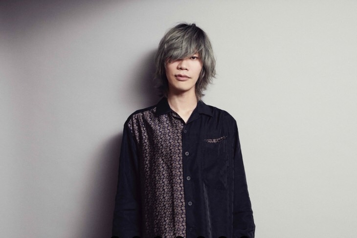

ハチ / 米津 玄師
HACHI / Kenshi Yonezu
作詞 作曲 絵
1991年3月10日生まれ
徳島県出身
2009年より、”ハチ”名義でニコニコ動画へオリジナル曲を投稿し始め、「マトリョシカ」「パンダヒーロー」「結ンデ開イテ羅刹ト骸」等の作品を発表。VOCALOIDシーンの中で、中毒性のあるロックサウンドで存在感を切り開いていき、日本だけでなく世界からも注目されるという、群を抜いた実績を誇る。また、イラストと映像も自身で手掛け、ハチ名義では2010年に２枚のアルバム「花束と水葬」「OFFICIAL ORANGE」をリリース。
2012年には、本名の “米津玄師” 名義で、自身がボーカルをとったアルバム「diorama」をリリース。 その独特なサウンドメイクをした楽曲の強さと、リアルな言葉の数々は圧倒的で、今の音楽シーンにはない新鮮さを鮮烈に刻み話題に。全曲に渡り、作詞・作曲・アレンジ・プログラミング・歌唱・演奏・ミックスを自身で手掛けているのに加え、動画・アートワークも独りで制作するという、驚異の才能を見せる。
2013年より、生音でのレコーディング形態をとり、２枚のシングル「サンタマリア」「MAD HEAD LOVE / ポッピンアパシー」をリリース。同年、ハチ名義では、２年９ヶ月ぶりの投稿となるVOCALOID楽曲「ドーナツホール」を発表。
2014年、2ndアルバム「YANKEE」をリリースし、オリコンチャート2位を記録。iTunes年間ランキング「Best of 2014 今年のベスト」ベストアルバムを受賞。「第7回CDショップ大賞」入賞。収録曲の「アイネクライネ」は、初のタイアップとして、東京メトロ2014年広告キャンペーン”Color your days.”CMソングに起用された。それと共に、聴いてくれる人ときちんと向き合う事を決意し、初めてのライブ活動を発表。初ライブであり、ワンマン公演となる「Premium Live 帰りの会」を6月に開催。
2015年1月、3rdシングル「Flowerwall」をリリースし、オリコンチャート3位を記録。タイトル曲は、ニコンD5500 TV-CMソングに起用された。合わせて、初の全国ツアー「花ゆりおちる」、そして初の夏フェス出演を果たした。 同年9月、4thシングル「アンビリーバーズ」を、10月には3rdアルバム「Bremen」をリリース。オリコンチャート1位、iTunes週間アルバムランキング1位、Billboard JAPAN HOT Albumチャート1位の三冠を達成。日本レコード大賞「優秀アルバム賞」を受賞。「アンビリーバーズ」は、MIZUNO WAVE ENIGMA5のCMに起用された。2016年1月からは全国ツアー「米津玄師 2016 TOUR / 音楽隊」を開催。
2016年は素晴らしいコラボが実現し、大きな挑戦の年に。「ユニバーサル・スタジオ・ジャパン®︎」15周年企画”やり過ぎコラボ”へイラストレーターとしての参加。ルーヴル美術館特別展「ルーヴル No.9 〜漫画、9番目の芸術〜」の公式イメージソングを担当、描き下ろしイラストを特別出展。映画「何者」の主題歌「NANIMONO」を、中田ヤスタカ氏と初コラボで制作し、米津は作詞と歌唱を担当。 また、5thシングル「LOSER / ナンバーナイン」、初の単行本「かいじゅうずかん」を発売。「LOSER」MVでは”ダンス”という新たな表現方法に挑戦し大きな話題となった。
2017年2月にはTVアニメ「３月のライオン」EDとなるシングル「orion」、6月にはTVアニメ「僕のヒーローアカデミア」OPとなるシングル「ピースサイン」をリリース。 8月は、二つのプロデュースワークを手がける。初音ミク10周年「マジカルミライ2017」テーマソングとして、約4年ぶりにハチ名義として「砂の惑星 feat.初音ミク」を発表し、ニコニコ動画におけるボーカロイド曲最速ミリオン達成記録を樹立。また、アニメ映画「打ち上げ花火、下から見るか？横から見るか？」主題歌を作詞・作曲・プロデュースし、DAOKO×米津玄師「打上花火」として発表。 11月、4thアルバム「BOOTLEG」をリリース。菅田将暉氏を迎えた「灰色と青」、池田エライザ氏を迎えた「fogbound」、共同アレンジ&Gt. King Gnu常田大希氏/B.マーガレット廣井氏 八十八ヶ所巡礼/Dr.やおたくや氏を迎えた「爱丽丝」等、積極的なコラボと挑戦的なサウンドにより、初週チャート23冠という結果を残し、第10回CDショップ大賞の大賞受賞。SSTVアワードでは、BEST MALE ARTIST受賞、「灰色と青（＋菅田将暉）」がBEST COLLABORATION受賞。発売同日よりワンマンツアー「米津玄師 2017 TOUR / Fogbound」を開催。
2018年1月、TBS金曜ドラマ「アンナチュラル」の主題歌として、新曲「Lemon」をかきおろした。ドラマアカデミー「最優秀ドラマソング賞」を受賞。日本レコード協会「史上最速」100万DL認定を受けた。 8月、「＜NHK＞2020応援ソング」として、Foorinがうたう「パプリカ」を作詞・作曲・プロデュース。（振付は、辻本知彦氏・菅原小春氏に依頼） 10月には、両A面シングル「Flamingo / TEENAGE RIOT」をリリースし、オリコン週間シングルランキングで1位を獲得。「Flamingo」は「ソニー完全ワイヤレスイヤホン」CMソングに、「TEENAGE RIOT」は「GATSBY」CMソングに起用された。 また、「Lemon」は、「ソフトバンク」のCMにも起用され、2018年各主要年間チャートを総なめにし、MV４億再生、配信フィジカル合算 300万枚セールスを突破という音楽史に残る記録をのこし、「第69回 NHK紅白歌合戦」で初のテレビ歌唱を果たした。
2019年1月より「米津玄師 2019 TOUR / 脊椎がオパールになる頃」を実施。初の海外公演となる上海、台北公演も大成功におさめた。 4月、菅田将暉氏の新曲として「まちがいさがし」を作詞・作曲・プロデュース。 6月、五十嵐大介 原作、映画「海獣の子供」主題歌として、「海の幽霊」を発表。 8月、NHK「みんなのうた」8-9月の曲として、「パプリカ」のセルフカバーを発表。 9月、TBS日曜劇場「ノーサイド・ゲーム」主題歌として、「馬と鹿」を書き下ろし、9月11日にシングルとしてリリース。Billboard JAPAN週間ランキングで首位を獲得。同曲は、ラグビーWCの会場でも曲がかかるなど、スポーツにおける感動のシーンでも鳴り響き大きな広がりを見せた。 また、「Lemon」は、2019年上半期ランキングでも首位25冠となり、Billboard JAPAN年間ランキングでは「史上初」の２年連続首位を獲得。日本レコード協会「史上最速」300万DLを記録した。 12月、「NHK2020ソング」として、嵐の「カイト」を作詞、作曲、プロデュースし、「第70回 NHK紅白歌合戦」にて初披露された。
2020年2月より、全国ツアー「米津玄師 2020 TOUR / HYPE」を開催。COVID-19による影響で、開催途中で延期決定を余儀なくされる。 3月、TBS金曜ドラマ「MIU404」の主題歌を担当することを発表するも放送が延期となり、6月「MIU404」の放送が決定。主題歌「感電」が初回放送で初解禁される。「感電」のMVは、公開より1時間50分での100万再生となり、自身初の記録を更新。 8月5日、米津玄師5thアルバム「STRAY SHEEP」が発売。「Lemon」「馬と鹿」「感電」といったドラマ主題歌に加え、Foorin「パプリカ」、菅田将暉「まちがいさがし」のセルフカバー、「海の幽霊」「Flamingo」「TEENAGE RIOT」など大ヒットナンバーが並び、新曲として、野田洋次郎氏とのコラボ曲「PLACEBO＋野田洋次郎」、「カロリーメイト」CMに起用された「迷える羊」、発売日にMVが公開された「カムパネルラ」などが収録された。 合わせて、TOUR HYPEの延期公演が中止となり、実験的な形として、3億5,000万人のユーザーを誇るオンラインゲームFORTNITEにて、「FORTNITE×米津玄師バーチャルイベント」が全世界開催され、圧倒的な視聴数を記録。同時に、ユニクロとのコラボで「米津玄師オリジナルUT」の全世界発売を展開し、コロナ禍での新しいライブとグッズの世界展開が国外含め大きな話題となった。 アルバム「STRAY SHEEP」は、発売後、是枝裕和監督による「カナリヤ」MVを公開。「感電」がApple MusicのCMに起用。発売から１週間で100万セールスを記録し、その後200万セールスに到達。2020年の年間ランキングは46冠。AAC Awardや、Forbesが選ぶ「アジアのデジタルスター100」、芸術選奨「文部科学大臣新人賞」など多くの賞を受賞した。
2021年は、1月「news zero」のテーマソングとして「ゆめうつつ」を、4月TBSドラマ「リコカツ」主題歌として「Pale Blue」を発表。シングルを6月16日にリリースし、カップリング曲の「死神」は落語をモチーフとしたMVを公開した。Billboard総合ランキング1位。オリコンDLランキングは、史上初のTOP3独占という記録を残した。